Notes taken @ ETH Zurich
Table of Contents
23FS
Mobile Health and Activity Monitoring
Functional Genomics
Table of Contents
- 01. Modern Genomics I
- 02. Modern Genomics II
- 03. Transcriptomics I
- 04. Transcriptomics II
- 05. miRNAs and Other Small RNAs
- 06. Proteomics
- 07. Metabolomics
- 08. Single Cell Mass Cytometry
- 09. Protein Networks
- 10. Epigenomics and Gene Regulation
- 11. Quality Control and Standards
Modern Genomics II
I cannot understand his accent...
Contents that (I think) are important
Linkage disequilibrium (LD)
Coefficient of linkage disequilibrium
Given two loci and (can have allele or , or ), the coefficient of linkage disequilibrium is defined as
Below shows two examples of calculation.
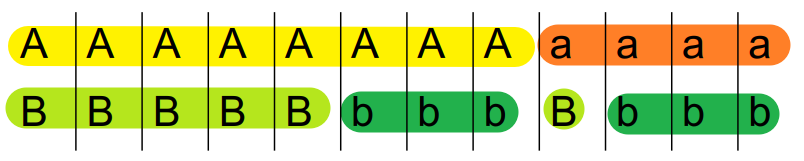
A and B are linked to some extent.
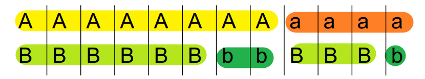
Here A and B are not linked at all.
Basically we are testing whether P(A) and P(B) are independent.
Relative measures of LD
- if is positive, if is negative
Nucleotide diversity
Average proportion of pairwise differences between the sequences
Give a multiple sequence alignment, is defined as
where is the number of pairwise comparisons, and is the proportion of differences between the th and th sequences.
Below shows an example of calculation.
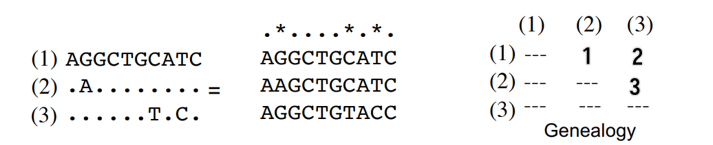
Basically just calculating the average number of differences in the matrix.
Course contents according to recording
Title: Applications of next-generation sequencing and other genomic techniques
- Resequencing to identify genetic basis of phenotypic variation
- Outlier approach
- Genome-wide association studies (GWAS) and linkage disequilibrium
- Introduction to RNA-seq (transcriptome) focusing on genome duplication
- Resequencing to detect signature of selection: nucleotide diversity
Microbial community and metagenomics, ChIP-seq, epigenomics, whole genome assembly as reference
- Evolutionary functional genomics can...
- identify ecologically relevant genes
- inferring selection & population processes
Transcriptomics I
Unimportant text is grayed out but worth reading for fluency and context.
- Motivation
- RNA species
- RNA selection methods
- RNA-seq experiment workflow overview
- RNA-seq experiment design
- RNA-seq read mapping methods
- Quality control and reporting considerations after mapping
- Expression quantification
Motivation
We are interested in the expression of genes in a cell. Altough proteins are the actors of genes instead of mRNA transcripts, mRNAs transcripts are easier to measure because selection has chosen them to convey the genetic message in a faithful way. Also there are plenty of interesting non-coding RNAs.
RNA species
80% of the total RNA is rRNA. 14% is tRNA. Only 1-3% is mRNA. All other species account for the remaining 1-3%.
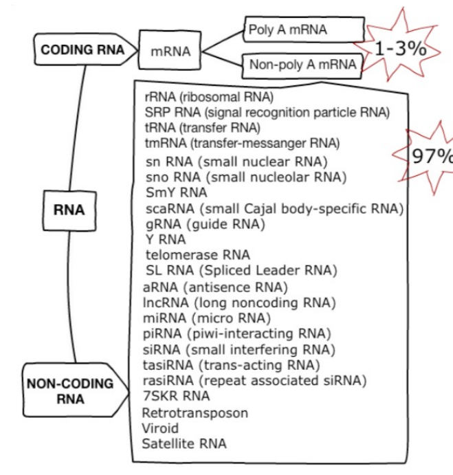

RNA selection methods
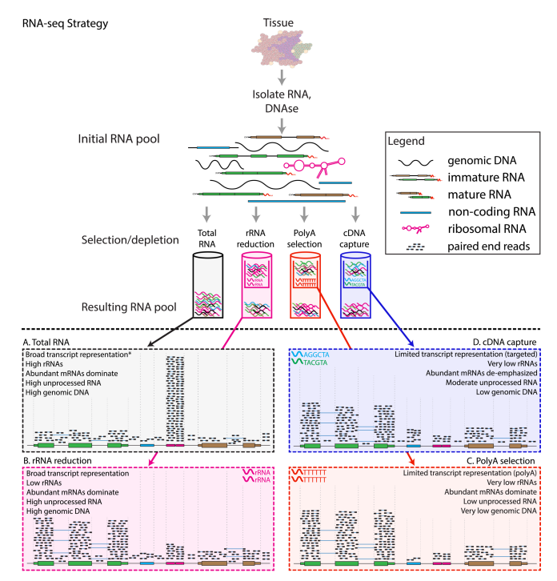
- A: total RNA
- Unbiased estimation
- Dominate by rRNA, not very informative
- B: ribosomal reduction/depletion
- Use probes that bind to rRNA and pull them out
- < 5% rRNA left
- C: poly-A selection
- Use probes that bind to poly-A tails
- Selects for mRNA, and also some long non-coding RNAs (because they also have poly-A tails)
- D: cDNA capture
- Design target probes that bind to a certain set of RNAs
- Limited transcriptome coverage
90% of transcriptome research utilize poly-A selection; 5% of them go for ribosomal depletion because their mRNAs are of low quality and fragmented. The rest 5% do have high-quality mRNAs but still go for ribosomal depletion because they want to estimate other RNA species at the same time.
Note: current illumina sequencers cannot sequence miRNAs (20-25nt) and mRNA fragments (100-300nt) together (because of the large length discrepency)
RNA-seq experiment workflow overview
A typical RNA-seq experiment workflow is shown below.
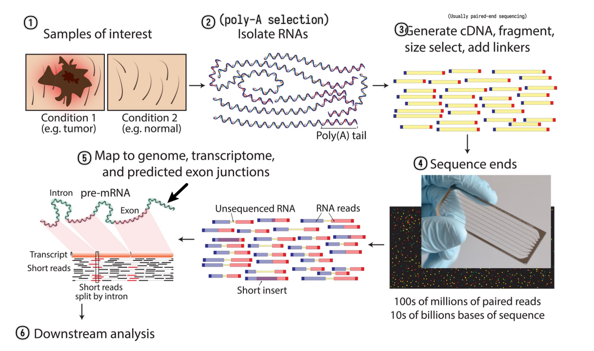
We can do either single-read sequencing or paired-end sequencing (as is shown in the figure above) in the third step.
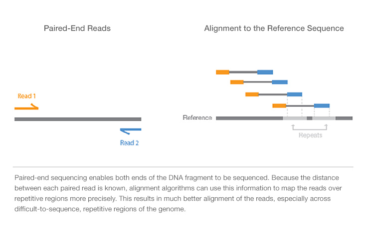
It can also be summarized into a flow diagram.
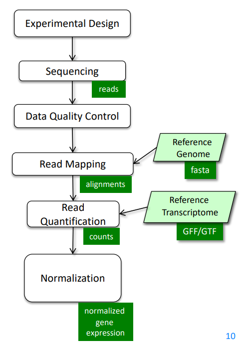
The following sections will go into more details about each step.
RNA-seq experiment design
- RNA-seq experiments are implemented as comparative experiments
- RNA-seq is used to measure the relative abundance (expression) of each
mRNA (gene) in a sample
- sample: We cannot sequence all the RNA fragments. Instead, we randomly select about 20M fragments as a representation of the total RNA obtained. Note that we can sample multiple times.
- RNA-seq can link gene expression to
- genotype
- phenotype
- treatment response
RNA-seq read mapping methods
Considerations
Ideally, the read mapping process is as simple as sequencing the transcribed RNAs and then mapping the sequences back to the genome to identify the gene expression.
However, in reality, the process is much more complicated because current sequencers can only perform faithful sequencing up to a couple of hundreds of bp (usually 200-800bp), and a typical mRNA is 2-3kb long. Thus, the mRNA needs to be first chopped into fragments and then sequenced. When we do the mapping, we're mapping the chopped reads back to the genome instead of the whole spliced sequences. The existence of alternative splicing (protein isoforms) and sequencing errors makes the mapping process even more complicated.
While discussing the mapping process, those limitations and problems should be kept in mind.
How to map reads to a genome?
- Mapping algorithms must be
- Fast
- Thus usually find perfect or near-perfect (tolerating 1bp mismatch) match
- Able to handle SNPs, indels and sequencing errors
- Fast
We can always perform sequence alignment (here needs local alignment/Smith-Waterman alignment). Of course the score matrix should be good to determine the correct alignment. But this is slow because it requires quadratic efforts.
What if we want to map billions of reads?
- Indexing method
- Reads are aligned by index lookup instead of seq comparison
- Usually hashed so the lookup time is much faster
- If lookup fails, actual sequence comparison is performed (more details on this in next chapter)
- Major aligners use the Burrows-Wheeler transform (BWT) to index
the reference genome
- Very small. Even for the human genome the index fits into 3GB RAM.
- Example aligners
- bowtie, bowtie2
- BWA
- TopHat2
- STAR
- SOAP
- ...
How to deal with SNPs and indels?
- SNPs
- Can always be handled by performing real Smith-Waterman alignment but expensive
- At mismatched positions, try all possible bases and search the BWT index
again
- Computing effort grows exponentially
- Gapped alignment
- Chop reads into short segments (seeds)
- align those seeds in a mismatch-free manner (typically using BWT index lookup again)
- stitch them back together
- Might require multiple rounds of chopping
- Indels
- Can only be found with gapped alignment (described above), BWT lookup is not enough
How to deal with introns (basically very large insertions)?
- Approaches
- Map directly to trapscript sequences (no intron) not to the genome
- Pro: introns are not a problem
- Cons: unknown genes/isoforms cannot be detected
- Spliced alignment to genome
- Pro: finds reads from unknown gene loci or unknown isoforms
- Con: larger search space, potentially more false positives, wrong alignment to pseudogenes
- Combination of above
- Map directly to trapscript sequences (no intron) not to the genome
- Difference between spliced alignment and gapped alignment
- Gapped alignment: longer gaps means high score penalty and lower score
- Spliced alignment: long gaps at canonical splice-sites are allowed, but lacking canonical splice-sites or gaps elsewhere (at non-canonical splice sites) are penalized
- Pseudogenes
- associated retrotransposed spliced sequence of a certain gene, thus intron-free, and appears "exonic"
- Have almost the same sequence as the original gene
- Not functional because they do not have access to promotors so won't be transcribed
- Usually contain more mutations because there are no selection pressures to keep them intact
- Exonic reads will map to both the gene and its pseudogene, but likely preferring gene placement due to lack of mutations
- A spliced read could be incorrectly assigned to the pseudogene as it appears to be exonic, preventing higher scoring spliced alignments from being pursued
Bowtie
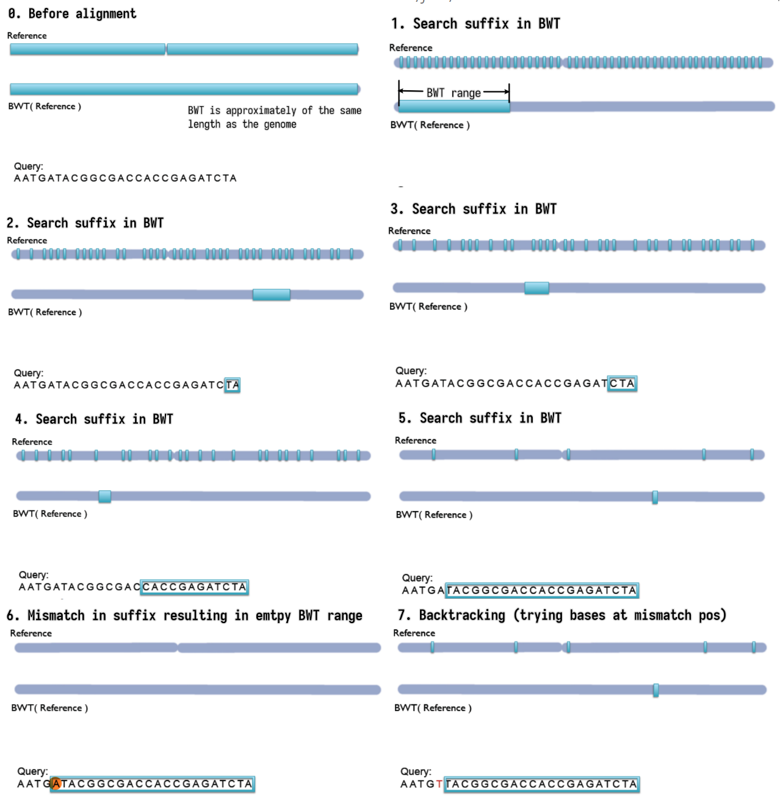
- Step-by-step backward searching the suffix of the query sequence in
the BWT index
- Exact matching
- Searched suffix appears consecutively in BWT
- The size of range in BWT shrinks or remains the same
- almost does not handle mismatches; a single mismatch will lead to
empty BWT range / failed index lookup
- mismatches can come from
- Sequencing error (illumina: )
- True variation (SNPs, human mutation rate
- mismatches are not rare events! at least 10% of >100nt reads
- mismatches can come from
- Empty BWT range activates backtracking
- All possible bases are tried at the mismatched position
- Gapped alignment
TopHat2
Handles mismatches by gapped alignment. It first performs (optional) transcriptome alignment (exonic), and then performs genome alignment for the unmapped reads. The unmapped reads in the second step are multi-exon spanning reads and undergo spliced alignment by chopping the reads into even shorter segments and splice site identification etc.
The figure is too complicated, not recommended to go into details but still attached here for reference.
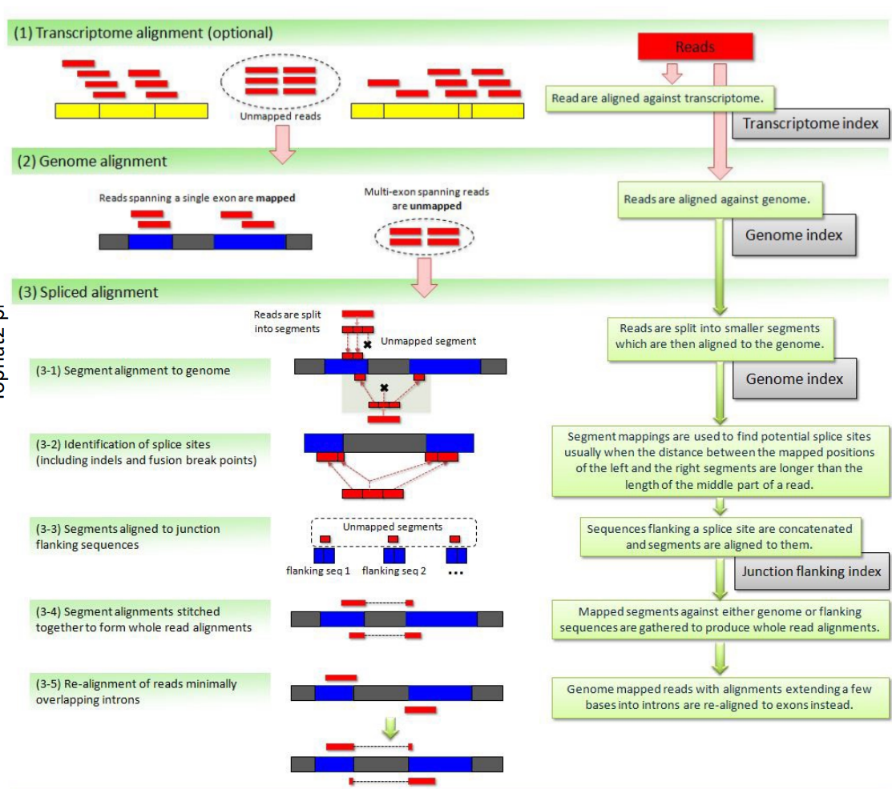
STAR
Direct alignment of non-contiguous sequences to the reference genome.
- First find Maximal Mappable Prefix (MMP) of the read
- MMP is the longest prefix of the read that can be mapped to the reference genome
- MMP is found by searching the BWT index
- Possible to tolerate a certain degree of mismatches using extend mode
- Stop extending MMP if MMP covers the whole read or encounters a mismatch
- In the second case, find the MMP of the remaining suffix of the read
- Repeat until the whole read is covered
- Possible to use trim mode to get rid of A-tail or adapter sequence
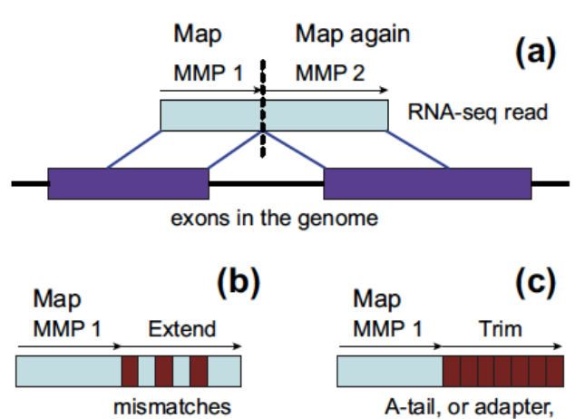
Quality control and reporting considerations after mapping
PHREAD quality
- Each called base is given a quality score
- (PHRED score)
- is the estimated probability of the base being called incorrectly
- is the negative log of the probability
- Q-score = 10: prob = 0.1
- Q-score = 20: prob = 0.01
- Q-score = 30: prob = 0.001
- Q30 is often used as a cutoff for high quality reads
- How to use: downweight the low-quality bases when computing the alignment score
- First introduced for capillary sequencers
- PHRED scores are determined by the sequencer that directly rates how reliable the measured signal is
Read trimming
Not all parts of the read are useful for alignment. It is common to trim the reads.
- Reasons for trimming:
- Systemetic errors of sequencer
- Illumina sequencers have high error rate at the first few bases
- Basically all sequencers have increasing error rate towards the end of the read
- Adapter trimming
- If the inserted DNA/RNA fragment is too short, the read will contain part of the adapter (since the sequencer generally will sequence 100bp at each end)
- Can be challenging if:
- The inserted sequence is 90-100bp -- the incorporated adapter sequence will only be a few bp long
- The read has many sequencing errors
- 3'-bias / degradation
- The 3' end of the read is generally more likely to be degraded than the 5' end
- Depending on RNA degradation and extration protocols reads may not be equally distributed along the transcripts
- Systemetic errors of sequencer
- Trimming methods
- Hard trimming: trim a fixed number of bases from the beginning and/or end
- Quality trimming: cut the end of the read as soon as the base quality drops below a threshold
- Soft trimming: trim the read that cannot be aligned to the reference genome
Multiple alignments and report considerations
- A read may have multiple valid alignments with identical or similarly good
alignment scores
- Aligners may use different reporting strategies:
- Randomly select one alignment from the top-scoring alignments
- Report all alignments that are within delta of the top-scoring alignment; clip if more than alignments are found
- Report only alignments if they are unique (no other alignment within delta of the alignment score)
- Do not report anything if more than valid alignments are found
- …
- Aligners may use different reporting strategies:
- Whether a read has a unique alignment depends on
- the read sequence and the sequence homology of the organism
- the search algorithm of the aligner
- Whether a read has a single reported alignment depends additionally on
- the reporting options strategy of the aligner
Expression quantification
- Expression quantification on
- Gene level
- Reads belong to a gene locus
- Isoform level
- Reads belong to an isoform
- Gene level
How to count reads?
- Unique mapped reads
- Multi-reads are ignored – potentially biased quantification
- All mapped reads
- Assignment of multi-reads need abundance estimation of overlapped genes/isoforms
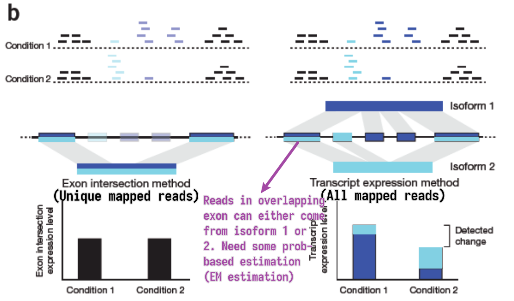
EM estimation
- General steps
- Estimate abundances based on uniquely mapping reads only
- For each multi-read, divide it between the transcripts to which it maps, proportionally to their abundances estimated in the first step
- Recompute abundances based on updated counts for each transcript r.
- Continue with Step 2
- Model the sequencing and analysis process with a likelihood function
- E-step: Compute expected read counts given current expression levels
- M-step: Compute expression values maximizing likelihood given expected read counts
Alignment-free RNA-seq quantification
Instead of building BWT, we build hashed k-mer index based on known transcriptome, and search the k-mers in the reads to map and compute abundance.
Easier to understand through side-by-side comparison with the traditional alignment dependent method:
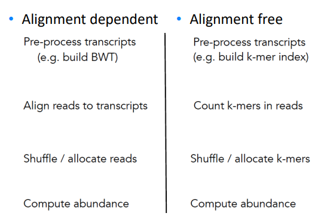
While allocating k-mer to transcript, we try to make each transcript covered as uniformly as possible.
- Pros
- Accurate and fast in quantifying KNOWN TRANSCRIPTS
- Counts can be aggregated to get gene-level quantification
- Cons
- Less well annotated genomes – less accurate results
- No alignments – no information about SNPs
- Transcript coverage is not uniform